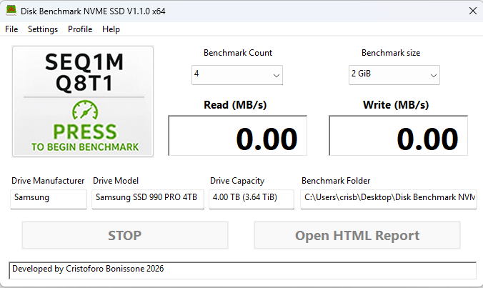
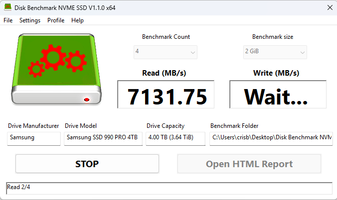

Benchmark the folder that really matters.
Disk Benchmark NVME SSD V1.1.0 x64 measures sequential read and write performance directly inside the folder you select. No installation, no abstract drive selection, and a clean HTML report after every completed test.

A straightforward benchmark with useful results.
The website keeps a modern presentation while matching the practical, familiar Windows style of the application.
Sequential read and write
Measure sustained performance with 1 MiB sequential operations and configurable test passes.
Folder-based testing
Benchmark the exact path where your data is stored instead of choosing only a physical drive.
Portable by design
Run the application without an installer. Copy it, launch it and start testing.
HTML reports
Each completed test generates a clean report with path, system and performance information.
Many storage types
Useful for NVMe SSDs, SATA SSDs, hard drives, USB storage and compatible network paths.
Automatic cleanup
Temporary test data is removed after completion, including recovery handling for interrupted sessions.
From ready to running.
Ready
The interface shows the selected test, benchmark count, test size, drive information and benchmark folder.

Running
During the benchmark, the application displays the current read result, waits for the write phase and updates the progress status.
Choose the folder
Select the exact path you want to measure.
Run the benchmark
Choose the pass count and test size, then press the benchmark panel.
Open the report
Review the completed read and write results in the generated HTML report.
Built to benchmark folders, not abstractions.
The idea
Disk Benchmark NVME SSD V1.1.0 x64 was created to measure storage performance directly where files are actually stored. The goal is to make benchmark results easier to understand and closer to everyday use.
The application uses a focused SEQ1M Q8T1 test and reports the best completed result.
Contact
Disk Benchmark NVME SSD V1.1.0 x64 1.1.0 x64
Free portable folder sequential benchmark for Windows.